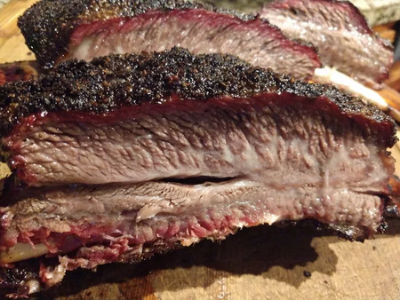

Texas BBQ Beef Ribs

Description
Texas-style beef BBQ: Slow-smoked, perfectly seasoned beef with a caramelized crust, showcasing the rich flavors of the Lone Star State.
With minimal seasoning, the focus is on the natural flavors of the beef, making it a true meat lover's paradise.
Ingredients
- hardwood pellets as needed
- 4 pounds beef short ribs
- ½ cup Montreal-style steak seasoning
- 2 tablespoons mild chili powder
- 1 teaspoon garlic powder
- 2 tablespoons Worcestershire sauce
- 8 fluid ounces apple juice
Directions
- Pour wood chips into the hopper of a pellet grill according to manufacturer's instructions.
Set temperature to 275 degrees F (135 degrees C).
- Trim ribs with a sharp knife to remove as much fat and silver skin from the top of the ribs as possible.
Leave the membrane on the bottom of each rack as this will help hold them together as they cook.
- Place steak seasoning in a coffee grinder or food chopper. Grind to a medium coarseness to reduce the size of the salt crystals.
Transfer to a shaker bottle. Add chili powder and garlic powder and shake until evenly combined.
- Rub 1/2 of the Worcestershire sauce on the bottom of the ribs as a binder,
then sprinkle on a medium to heavy coat of the rub mixture. Flip ribs and repeat on the meaty side.
Spritz a light coat of apple juice over top to help it "sweat."
- Immediately place ribs on the preheated pellet grill with the thicker side of the ribs towards the main heat source (toward the back, opposite the lid).
- Smoke ribs, spritzing them with a light coat of apple juice every 30 minutes to keep moist,
until the internal meat temperature reaches 198 to 203 degrees F (92 to 95 degrees C), 4 to 6 hours.
If it is taking longer don't be afraid to raise the heat to 325 degrees F (165 degrees C)
but just watch the internal temperature a little closer, as the window of being done is smaller due to the higher cooking temperature.
The temperature probe should slide into the meat like a brisket or like butter when they are ready.
- Remove ribs from the grill and place on a large cutting board.
Slice into individual ribs to serve, or remove the meat and place on a tray to serve.
Notes:
- Remove ribs from the grill and place on a large cutting board. Slice into individual ribs to serve, or remove the meat and place on a tray to serve.
- you can use a smoker instead of a pellet grill. Smoking time will depend on the weight of the rack.
Back to Top
Back To Main Page